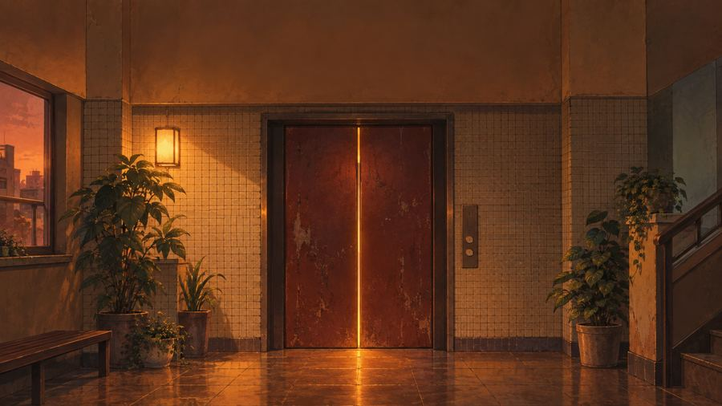
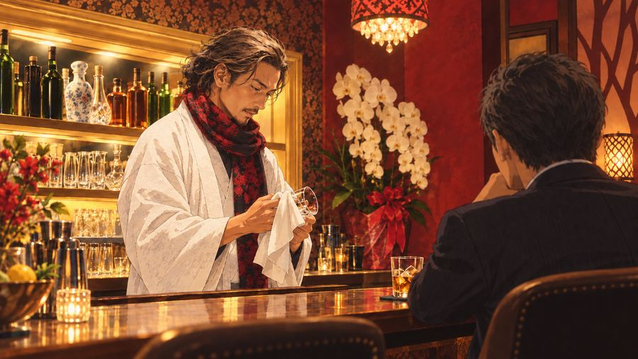
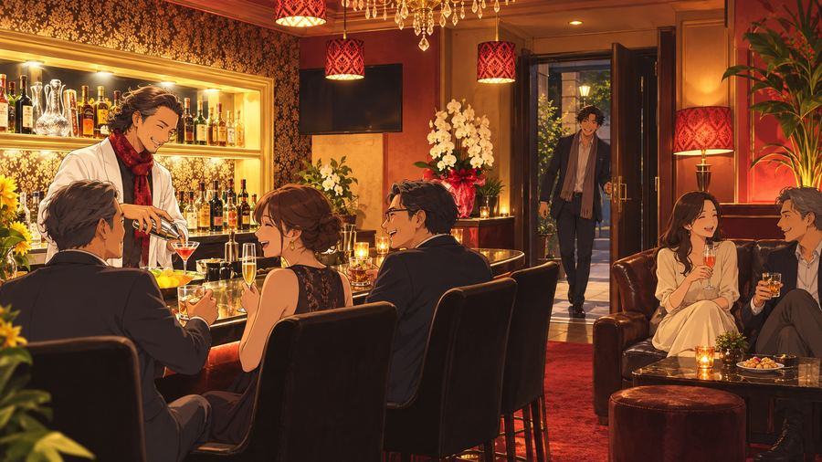
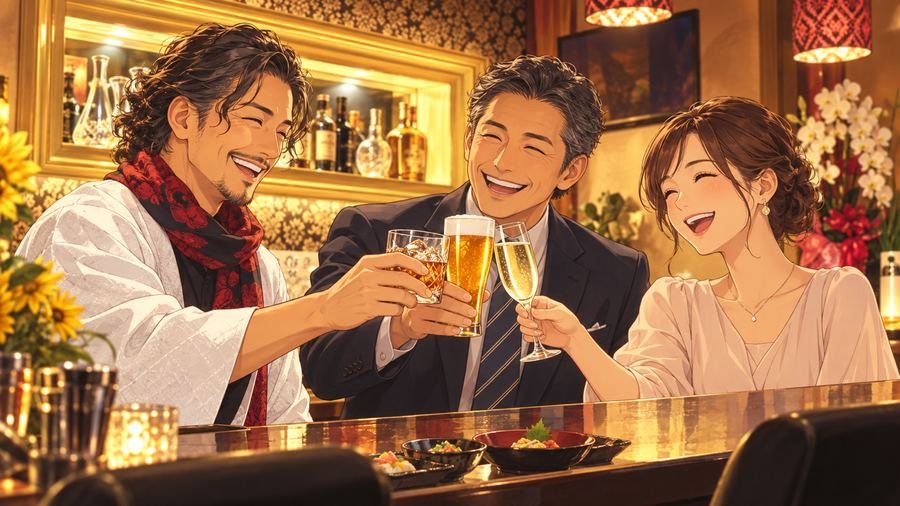
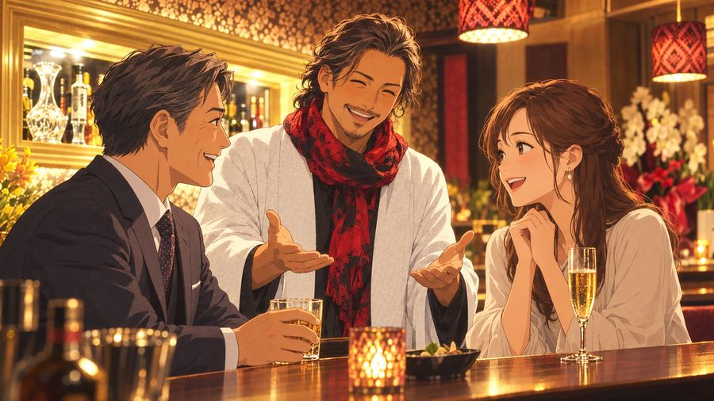
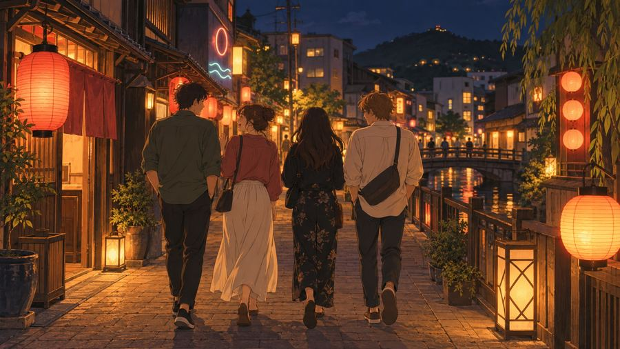
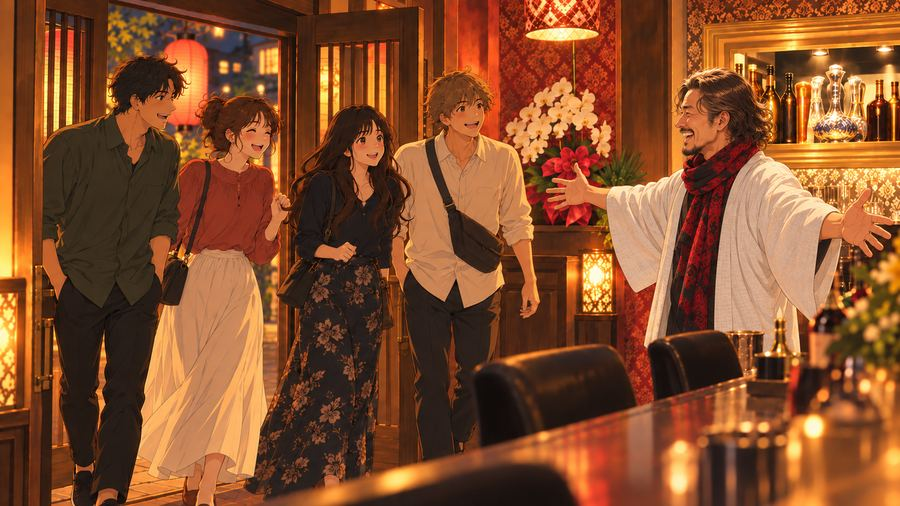
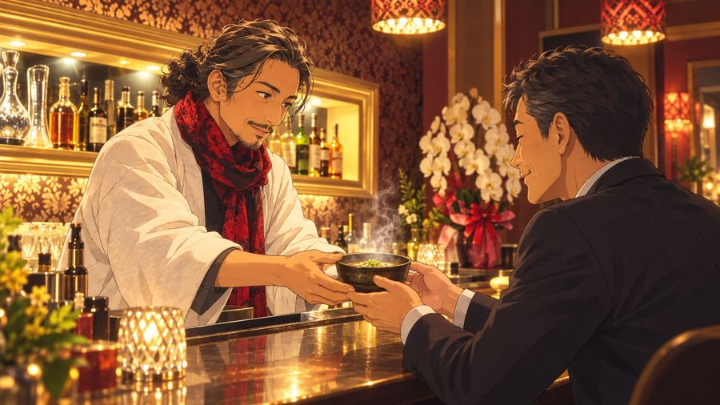
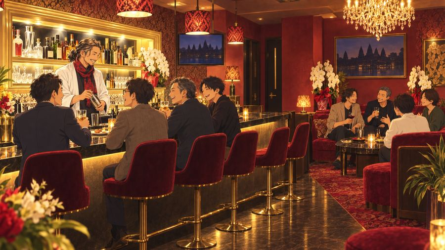
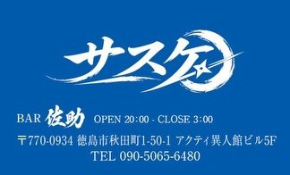

関原 和徳 様 ／ BUZZ＋・ジブリ風アニメ・約30秒 ／ 2026-09-18 ご確認用（社内・非公開）
| 秒 | シーン | 画 | テロップ |
|---|---|---|---|
| 0:00-0:02 | S1 導入 | （無テロップ・BGMイントロ） 徳島の夜の繁華街。提灯・ネオンの灯る通りをゆっくり奥へ |
|
| 0:02-0:04 | S2 屋号 |  |
BAR 佐助 雑居ビルのエレベーターホールへ吸い込まれるカメラ |
| 0:04-0:08 | S3 開店 |  |
出会いとご縁の場 白い羽織＋赤スカーフの佐助さんが一人静かにグラスを拭く。カウンターに男性客が一人 |
| 0:08-0:12 | S4 賑わい |  |
飲み放題・歌い放題（時間無制限） 扉が開くたびに客が増え、カウンターとソファ席が賑わっていく（カウンター内は店主1人のみ） |
| 0:12-0:16 | S5 乾杯 |  |
（無テロップ・ここで音楽の抑揚をつけて盛り上げる） 男性客・女性客・佐助さんが笑顔で乾杯 ※歌唱シーンは入れない |
| 0:16-0:19 | S6 出会い |  |
ここで出会いが生まれる 佐助さんが初対面の男性客と女性客を引き合わせ、二人が笑顔で意気投合する瞬間 |
| 0:19-0:22 | S7 はしご酒 |  |
（無テロップ） 客たちが店を出て、夜の徳島の街へ歩き出す後ろ姿 |
| 0:22-0:25 | S8 帰還 |  |
「ただいま」って、帰れる店 同じ客たちが再び扉を開けて戻ってくる。佐助さんが笑顔で迎える |
| 0:25-0:27 | S9 〆 |  |
（無テロップ） 佐助さんが温かい〆のスープを差し出す。客がほっとした表情 |
| 0:27-0:29 | S10 俯瞰 |  |
男性¥3,000／女性¥1,000（時間無制限・飲み放題歌い放題） 人数は実収容規模（8席程度）・カウンター内は店主1人のみ |
| 0:29-0:30 | S11 エンド |  |
BAR 佐助 〒770-0934 徳島県徳島市秋田町1-50-1 アクティ異人館ビル5F 090-5065-6480 OPEN 20:00 - CLOSE 3:00 Instagram @sasuke_0218 鈴木さん提供の完成デザインをそのまま使用 |
| 方向性 | 「シティポップというか、でも、まあジブリ風な感じ？どっちかというと」 |
| 作曲家イメージ | 「音楽は久石譲風やな。あれはほんま天才やから」 |
| 和楽器 | 「三味線と太鼓みたいな音が入っててもいいかもしれんね」（次回の阿波踊りバー展開への布石） |
| 抑揚（最重要） | 「もののけ姫の...ちゃららら〜ってブワーって上がる瞬間...この抑揚をつける」「ずっと平坦な感じだと、あんま楽しそうな雰囲気って出ないから」 |
| NGジャンル | 「イビサみたいなクラブでダンダンダン！とかじゃなくてね、パーティー系じゃなくて」 |
詳細・選定候補は BGMブリーフ_20260918.md 参照。次アクション：Epidemic Soundで候補2〜3曲をピックアップし試聴用に追加予定。